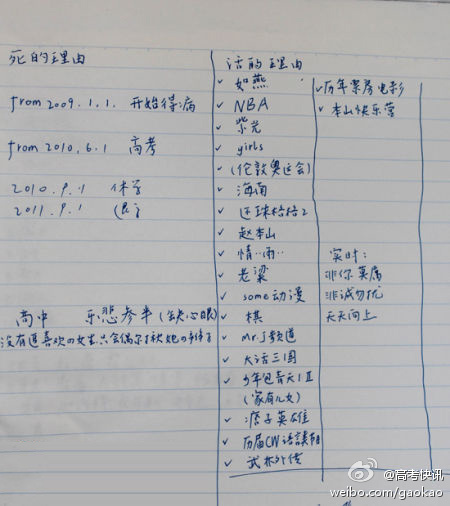

看得那一串我都觉得生活充满阳光……@高考快讯:【又是悲剧：高考成19岁男孩跳楼自杀理由 ！】5月4日，19岁男孩王硕跳楼身亡。在他的笔记本上分列出6个死的理由：高考、退学、生病、没有追喜欢的女生只会偶尔揪她辫子等。23个活的理由：NBA、伦敦奥运、girls 等。。但终究，活的理由没有战胜死的理由。。网页链接 
（读书摘抄）1500年世界上最大的城市是北京，有超过60万人，而前十名只有巴黎一个西方城市，不到20万人；到了1900年，世界上最大的城市是巴黎，有650万人，而西方以外的城市只有东京一个。短短的400年，西方人进行了各领域的多项革命，并完成了对整个世界的征服。